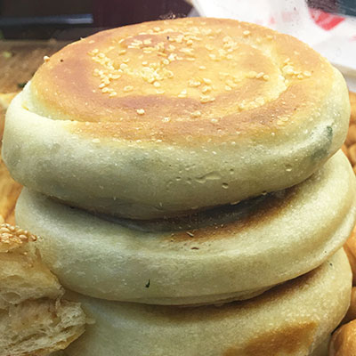

三星蔥餅（サンシンツォンビン）
台湾宜蘭の名産品「三星ネギ」と言う長ネギをふんだんに使ったシェンビンです。
中身はネギがぎっしり詰まっていてビリ辛く
外の生地はモッチリしていてとても食べ応えがあります。
| 小籠包 | 小籠包 | ショウロンポウ | ||
|---|---|---|---|---|
| 肉圓 | 肉園 | バーワン | ||
| 碳烤三明治 | 石炭火考三明治 | タンカオサンミンチ | ||
| 老麵蔥燒餅（芝麻蔥燒餅） | 老麺葱焼餅 | ラオメンツォンシャオビン | ||
| 水餃子 | シュイジャオズ | |||
| 炸豬排 | 火作猪拝 | 火作豚拝 | ツァーズーパイ | |
| 木須炒麵 | ムーシューチャオメン | |||
| 三星蔥餅 | 三星葱餅 | サンシンツォンビン | ||
| 紫菜湯 | ツーツァイタン | |||
| 豬腳飯（腿庫飯） | 猪脚飯 | 豚脚飯 | 者脚飯 | ズージャオファン |